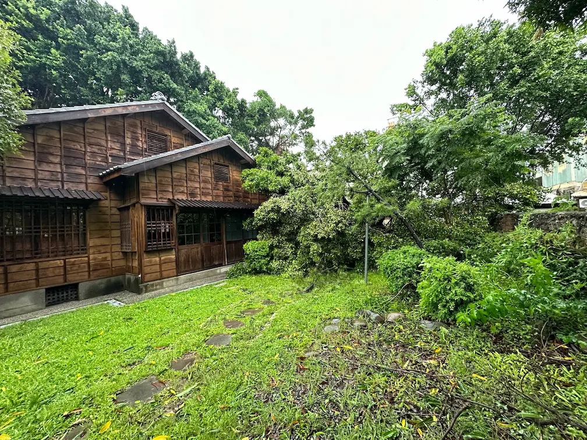
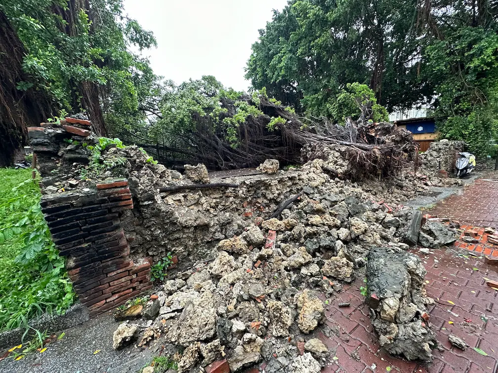

未竟之夢，抑是空中樓閣？ ──《茶席．體驗》影片拍攝企劃
此系列紀錄我那些規劃完成，但沒能實行的企劃，安放在此，讓他們告一個段落。
這是一份為了拍攝搭配詩文《茶席．體驗》的影片，而寫的拍攝執行企劃書。
詩的內容是這樣的：《茶席．體驗》
何處升起
宇宙一席間
泛起 沁香裊裊
盪漾 波光粼粼通往靈性的彩虹橋
於物質與非物質間一盞秘色
即宇宙我心升起
宇宙
畫面上，我透過以下劇情鋪陳來呈現詩中的意境：始於茶室內的正式茶會，隨著鏡頭的緩緩轉移，來到了開闊的庭園品茶，最終在拉遠的鏡頭中結束。透過場景的轉換，呈現茶客的意識，在茶會中隨著茶香，逐漸飄向開闊的天空。
為了具體展示我腦中所想的畫面，以及為達成效果所需的拍攝、剪輯手法，我上網查資料學習基本的影片製作流程，包含如何繪製分鏡表、運鏡技巧、轉場手法，景別、場次等術語代表的意思，最終完成以下的《茶席．體驗》拍攝執行企劃書。
此外，鑒於之前與同事的合作經驗，常常發生「我自認表達的很清楚了，對方也說沒問題，最後卻發現根本沒人理解我的意思」而搞砸的情況，除了盡可能在執行企劃書中詳盡的說明工作內容外，只要是能獨自進行的部份，我全都事先自己完成，以此將意外發生的可能降到最低。
《茶席．體驗》拍攝執行企劃書
茶席體驗拍攝執行企劃書
片名： 壹：《茶席．體驗》
故事大綱
- 劇情故事：前半部於主屋內茶空間呈現茶會樣貌，後半部場景移至室外，藉由個人泡茶的畫面呈現茶會時內五感空間開闊、明亮豐富的體驗。
- 風格調性：茶頻率推廣
宣傳文案：
何處升起
宇宙一席間
泛起 沁香裊裊
盪漾 波光粼粼通往靈性的彩虹橋
於物質與非物質間一盞秘色
即宇宙我心升起
宇宙
製作團隊
- 編劇：王昱荃
- 導演/分鏡：王昱荃
- 演員：
- 茶師：王昱荃
- 茶客：同事2
- 道具：王昱荃
- 攝影：王昱荃、同事1
- 攝助：同事2
- 剪輯：同事2
- 配樂：王昱荃
- 文案：王昱荃
道具：
- 攝影器材：iPhone14Pro、腳架、補光燈
- 拍攝道具：完整室內、室外茶席
場景：
- 場次1：主屋茶室，室內日景
- 場次2：主屋庭院，室外日景


- 鏡號1～2：用薰香機噴出的煙霧，與燒水壺水滾時冒出的水氣，進行相同元素轉場，不僅展現了茶室使用精油薰香，陶壺燒水的精緻質感，也對應了詩中首句「升起」與「沁香裊裊」的意象。
- 鏡號2～7：呈現正式茶會時的情景，以緩慢的步調，營造出舒適、放鬆的氣氛。
- 鏡號7～8：拍攝水注入茶壺，以鏡頭前推入壺內的方式轉場，銜接室外場景，象徵著茶客藉由茶這道「通往靈性的彩虹橋」，迎向了開闊的世界。鏡號8將鏡頭角度抬升到朝向天空的瞬間，配合音樂將劇情推至最高點，即是「我心升起 宇宙」的時刻。尤其鏡頭從壺中拉出，帶著霧氣往上升時，更是夢幻的一幕😇
- 鏡號9～10：「我心升起 宇宙」的另一版本，先平穩地轉場到室外，再將水注入茶壺、以鏡頭抬升到天空的方式達到高點。
- 鏡號11～13：以品茶者的安祥表情、周圍瀰漫的霧氣、映照於茶壺上的光影，呈現喝茶時寧靜美好的氛圍。
- 鏡號14：從茶師開始，逐漸拉遠的鏡頭，除了再次對應「升起的宇宙」意象，也展示了若晞茶空間美麗的園區景色。
正式拍攝前，我自己先試拍了幾個鏡頭，看起來效果相當不錯，尤其最後的14號鏡頭！正式拍攝時，清晨的金黃色陽光會從坐在木棧板上的茶師背後灑落，更能照耀出喝茶時，內心因茶而明亮的感動😇
完成後，我將執行企劃拿給參與的兩位同事看，並向他們講解我的設計理念，及使用的技術手法。兩位同事都是參與茶空間經營多年的茶師，也相當認同我對茶會氛圍的詮釋！ 確認過大家對工作內容沒有異議後，我們約好了拍攝時間。感覺一切都非常順利，這次真的要完成了！
然而，到了約定拍攝時間，卻無人出現。
事後我也沒有得到任何解釋，大家也突然都不跟我討論影片拍攝的事情了，彷彿什麼事都沒發生過一樣。
就這樣過了兩週，一場颱風過境，導致園區大樹倒塌，受損嚴重，進入了長達三個月的修整期。
場景直接沒了，也不用拍啦😢


至今我仍無法理解，究竟約定好要進行的事情，為何可以這樣輕易爽約，且不需解釋？還是說，對他們而言，這只是在陪我玩，算不上什麼重要的事，更稱不上工作？即便如此，約好的事情，是可以這樣放著不管，事後還當沒事的嗎？？
我很生氣，都已經把需要同事合力參與的部份降到最少了，需要他們幫忙的具體工作內容也寫得清清楚楚，再三確認沒問題了，事情還是能莫名其妙的搞砸，那我還能有什麼辦法呢？對於這種防不勝防的情況感到無力，我也不想追究真相為何了。再次遭受打擊後，我已無心繼續規劃，正在進行中的多部影片分鏡就此停擺，整個《若晞茶空間》形象影片系列也就到此為止了😢
更扯的是，一年多後，當時放我鴿子的同事在外面認識了專業的短影音製作顧問公司，問我要不要去參加他們的培訓課程，為若晞茶空間常態性拍攝宣傳短影音，還說「當年情況不允許，不過現在我們有能力拍影片了」。
？？？
當年我已經把所有能做的事情規劃好、做好，就差你來幫我掌鏡，拍攝就能完成，是在「情況不允許」什麼🙄 當時的拍攝就是因你而停擺的，現在你還有臉說這種話啊😠
不過，現在回過頭來看這份企劃，這種強調舒緩、放鬆氛圍的影片風格，比起快節奏的IG短影音，Youtube可能才是更適合他的舞台。也許，未能完成影片，讓他避免了在不適合的平台上亮相，正是他始終在我心中有著美好形象的原因吧。
也只能這樣想，才能讓自己在回憶起這件事的時候，血壓不至於升的太高😇